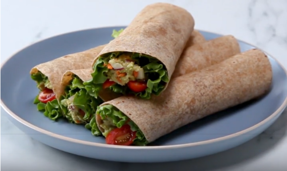

<a class="container" [routerLink]="['/recipe', 1]" routerLinkActive="router-link-active">
  <div>
    <h4>FEATURED RECIPE</h4>
    <div class="header">
      <h1>Avocado Tuna Wraps</h1>
      <p>by Joe Smith</p>
      <p>Total Time: 25 Minutes</p>
      <textarea readonly>
This zingy version of a classic recipe, introducing pesto and kalamata olives, is sure to make your mouth water - and you'll reexamine the idea of the same old tuna salad.
    </textarea>
    </div>
  </div>
  <div class="image">
    
  </div>
</a>